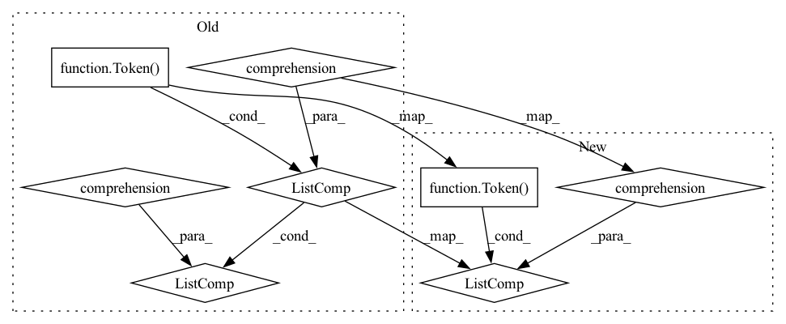

Pattern ID :2641

Before Change
else:
phrases = [self.t.tokenize(doc.cleaned) if doc.cleaned is not None else self.t.tokenize(doc.original)]
doc.tokens = [[Token(original=token) for token in phrase] for phrase in phrases]
return doc
After Change
super()._validate_document(doc)
doc.tokens = [[Token(original=token) for token in self.t.tokenize(phrase)] for phrase in doc.phrases]
return doc
In pattern: SUPERPATTERN
Frequency: 3
Non-data size: 8
Instances
Fragment ID: 10729430
Project Name: tomassosorio/nlpiper
Commit Name: 5928ef4e3df89a64fdcc0a494964ed3574956bc2
Time: 2021-03-22
Author: tomas.s.osorio@gmail.com
File Name: nlpiper/transformers/tokenizers.py
M Class Name: MosesTokenizer
N Class Name: MosesTokenizer
M Method Name: __call__(2)
N Method Name: __call__(2)
M Parent Class: Tokenizer
N Parent Class: Tokenizer
M File Name: nlpiper/transformers/tokenizers.py
N File Name: nlpiper/transformers/tokenizers.py
M Start Line: 71
M End Line: 90
N Start Line: 72
N End Line: 82
'>
Before Change
else:
phrases = [doc.cleaned.split() if doc.cleaned is not None else doc.original.split()]
doc.tokens = [[Token(original=token) for token in phrase] for phrase in phrases]
return doc
After Change
super()._validate_document(doc)
doc.tokens = [[Token(original=token) for token in phrase.split()] for phrase in doc.phrases]
return doc
'>
Fragment ID: 10729433
Project Name: tomassosorio/nlpiper
Commit Name: 5928ef4e3df89a64fdcc0a494964ed3574956bc2
Time: 2021-03-22
Author: tomas.s.osorio@gmail.com
File Name: nlpiper/transformers/tokenizers.py
M Class Name: BasicTokenizer
N Class Name: BasicTokenizer
M Method Name: __call__(2)
N Method Name: __call__(2)
M Parent Class: Tokenizer
N Parent Class: Tokenizer
M File Name: nlpiper/transformers/tokenizers.py
N File Name: nlpiper/transformers/tokenizers.py
M Start Line: 24
M End Line: 43
N Start Line: 34
N End Line: 44
'>
Before Change
super()._validate_document(doc)
doc.tokens = [[Token(original=token) for token in self.t.tokenize(phrase)] for phrase in doc.phrases]
return doc
After Change
d = doc if inplace else doc._deepcopy()
d.tokens = [Token(token) for token in self.t.tokenize(d.cleaned)]
return None if inplace else d
'>
Fragment ID: 10729432
Project Name: tomassosorio/nlpiper
Commit Name: 87be30421eaa573801c99b1eb3937e410aedb43a
Time: 2021-04-12
Author: FerrariDG@users.noreply.github.com
File Name: nlpiper/transformers/tokenizers.py
M Class Name: MosesTokenizer
N Class Name: MosesTokenizer
M Method Name: __call__(3)
N Method Name: __call__(2)
M Parent Class: BaseTransformer
N Parent Class: Tokenizer
M File Name: nlpiper/transformers/tokenizers.py
N File Name: nlpiper/transformers/tokenizers.py
M Start Line: 80
M End Line: 84
N Start Line: 70
N End Line: 84